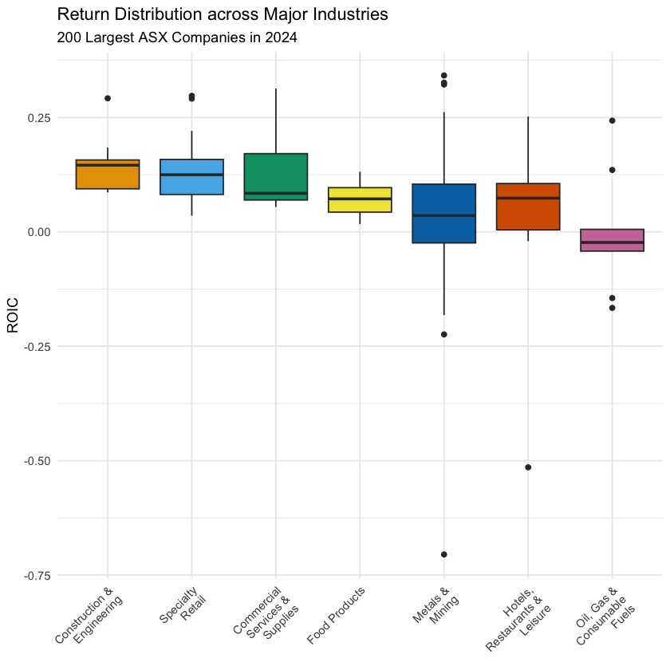

Topic 4.3 - 数据分组统计¶
1. 数据分组统计基础¶
(1) 数据分组统计的概念¶
数据分组统计，其实就是我们常说的计算均值、方差、标准差等统计量，只不过我们此时不是在整个数据框上计算这些指标，而是在每一组内计算这些指标。
我们来通过以下例子来看一下分组统计的概念：

-
在这个表中，如果我们对全部数据进行求和，得到的结果就是这 9 个销量数字的总和
-
但是如果我们按照不同商品种类进行分组统计的话，我们就会得到每个商品种类的销量总和
-
这个就是分组统计的概念，我们先按照商品种类进行分组，然后在每个组内进行求和，得到每个商品种类的销量总和
(2) 数据分组统计的函数¶
数据分组统计会用到以下两个重要函数：
group_by()函数：用于对数据框进行分组，里面的参数是列名，按照指定的列名来进行分组-
summarise()函数：用于对分组后的数据框进行统计计算，里面的参数是指标名 = 计算表达式形式，其中计算表达式包括：n()：计算每个分组的样本量mean(列名)：计算指定列的均值var(列名)：计算指定列的方差sd(列名)：计算指定列的标准差median(列名)：计算指定列的中位数min(列名)：计算指定列的最小值max(列名)：计算指定列的最大值
这两个函数经常是一起使用的：
- 首先使用
group_by()函数，按照指定的列名来进行分组，然后使用summarise()函数对分组后的数据框进行统计计算，计算出我们想要的指标 - 如果只使用
group_by()函数的话，得到的结果只是一个和原来数据框一模一样的数据框，只不过 R 会记住，这个数据框有个分组的属性，是按照某一列来分组的 - 之后，
summarise()函数计算的结果是一个新的数据框，其中的每一行对应一个分组，每一列对应一个指标
(3) 数据分组统计的示例¶
我们先导入上一节的包和数据：
library(tidyverse) # 包含了 ggplot2、dplyr、tidyr 等常用数据处理和可视化包
library(scales) # 包含用于坐标轴格式化和转换的函数
library(ggokabeito) # 包含色盲友好的调色板（可选）
library(ggthemes) # 包含额外的 ggplot 主题
library(patchwork) # 用于组合多个 ggplot 图形
library(stringr) # 包含一致的字符串操作函数
library(RColorBrewer) # 包含用于定性和顺序颜色调色板的函数
# 导入 ASX 200 的数据，并且只筛选本节会用到的列
asx_200_2024 <- read_csv("asx_200_2024.csv") |>
select(gvkey, conml, fyear, ebit, invested_capital, industry)
# 展示数据的前 10 行，来看看数据的结构和内容
asx_200_2024 |> slice_head(n = 10)
| gvkey <chr> | conml <chr> | fyear <dbl> | ebit <dbl> | invested_capital <dbl> | industry <chr> |
|-------------|------------------------|-------------|------------|------------------------|---------------------------------------------------|
| 013312 | BHP Group Ltd | 2024 | 22771.0 | 69838.0 | Metals & Mining |
| 210216 | Telstra Group Limited | 2024 | 3712.0 | 34320.0 | Diversified Telecommunication Services |
| 223003 | CSL Ltd | 2024 | 3896.0 | 31584.0 | Biotechnology |
| 212650 | Transurban Group | 2024 | 1132.0 | 31864.0 | Transportation Infrastructure |
| 100894 | Woolworths Group Ltd | 2024 | 3100.0 | 22292.0 | Consumer Staples Distribution & Retail (New Name) |
| 212427 | Fortescue Ltd | 2024 | 8520.0 | 24931.0 | Metals & Mining |
| 101601 | Wesfarmers Ltd | 2024 | 3849.0 | 19863.0 | Broadline Retail (New Name) |
| 226744 | Ramsay Health Care Ltd | 2024 | 938.7 | 16465.6 | Health Care Providers & Services |
| 220244 | Qantas Airways Ltd | 2024 | 2198.0 | 6885.0 | Passenger Airlines (New name) |
| 017525 | Origin Energy Ltd | 2024 | 952.0 | 12867.0 | Electric Utilities |
我们首先来看一个例子，我们在上一节的 returns 数据框中，先按照行业来分组，之后计算每个行业中有多少个公司：
returns_summary_obs <- returns |>
# 按照行业进行分组
group_by(industry) |>
# 计算每个行业的观测值数量
summarise(obs = n()) |>
# 按照观测值数量从多到少排序
arrange(desc(obs))
returns_summary_obs
| industry <chr> | obs <int> |
|-------------------------------------------------------|-----------|
| Metals & Mining | 42 |
| Specialty Retail | 14 |
| Construction & Engineering | 11 |
| Hotels, Restaurants & Leisure | 11 |
| Oil, Gas & Consumable Fuels | 9 |
| ... | ... |
| Gas Utilities | 1 |
| Independent Power and Renewable Electricity Producers | 1 |
| Multi-Utilities | 1 |
| Pharmaceuticals | 1 |
| Real Estate Management & Development (New Code) | 1 |
我们再来看一个例子，这时我们只关注几个主要的行业，来看看这些行业的投资回报率 roic 的均值与标准差：
# 定义一个包含主要行业名称的向量
big_industries <- c(
"Metals & Mining",
"Specialty Retail",
"Construction & Engineering",
"Hotels, Restaurants & Leisure",
"Oil, Gas & Consumable Fuels",
"Commercial Services & Supplies",
"Food Products"
)
# 分组统计每个行业的投资回报率均值与标准差，并且按照均值从高到低排序
returns_summary_stats <- returns |>
# 只保留选定行业的行
filter(industry %in% big_industries) |>
# 按行业分组
group_by(industry) |>
# 计算每个行业的投资回报率均值与标准差
summarise(
ave_roic = mean(roic, na.rm = TRUE) |> round(4), # 计算投资回报率的均值，并且保留四位小数
sd_roic = sd(roic, na.rm = TRUE) |> round(4), # 计算投资回报率的标准差，并且保留四位小数
sk_roic = moments::skewness(roic, na.rm = TRUE) |> round(4) # 计算投资回报率的偏度，并且保留四位小数
) |>
# 按照均值从高到低排序
arrange(desc(ave_roic))
# 显示统计结果
returns_summary_stats
| industry <chr> | ave_roic <dbl> | sd_roic <dbl> | sk_roic <dbl> |
|------------------------------------|----------------|---------------|---------------|
| Construction & Engineering | 0.1442 | 0.0597 | 1.2984 |
| Specialty Retail | 0.1400 | 0.0810 | 0.8255 |
| Commercial Services & Supplies | 0.1332 | 0.0950 | 1.0611 |
| Food Products | 0.0714 | 0.0413 | 0.2335 |
| Metals & Mining | 0.0357 | 0.1770 | -1.5593 |
| Hotels, Restaurants & Leisure | 0.0349 | 0.2012 | -1.9093 |
| Oil, Gas & Consumable Fuels | -0.0028 | 0.1270 | 0.6606 |
对于上面计算出来的偏度，我们还可以使用箱式图来验证：
returns_big_industries <- returns |>
# 只保留选定行业的行
filter(industry %in% big_industries) |>
# 将行业名称设置为因子类型，并且按照均值从高到低
mutate(industry = factor(industry, levels = returns_summary_stats$industry))
box_plot <- returns_big_industries |>
# 绘制箱式图，x 轴是行业，y 轴是投资回报率 roic，填充颜色根据行业进行区分
ggplot(aes(x = industry, y = roic, fill = industry)) +
# 使用 geom_boxplot 函数绘制箱式图，并且去掉图例
geom_boxplot(show.legend = FALSE) +
# 使用色盲友好调色板
scale_fill_okabe_ito() +
# 设置图表的标题和轴标签
labs(
x = NULL,
y = "ROIC",
title = "Return Distribution across Major Industries",
subtitle = "200 Largest ASX Companies in 2024"
) +
# 默认主题使用 theme_minimal()
theme_minimal() +
# 主题中设置以下调整：调整 x 轴文本的角度为 45 度，并且设置水平对齐方式为 1（右对齐）
theme(axis.text.x = element_text(angle = 45, hjust = 1)) +
# 允许 x 轴标签换行，设置每行最多显示 15 个字符，这样当行业名称过长时可以自动换行，避免重叠在一起
scale_x_discrete(labels = scales::label_wrap(15))
# 显示箱式图
box_plot

这里我们额外拓展一下：
-
Skewness（偏度）是一个 矩统计量（Moment Statistics），用于衡量数据分布的非对称程度：
- 如果是正数，说明数据是右偏的
- 如果是负数，说明数据是左偏的
- 如果是零，说明数据是对称的
-
而箱式图中的各个指标，都是顺序统计量（Order Statistics）：
-
虽然它们都能反应数据分布情况，但是大家要知道它们的本质是不一样的
2. 数据框列操作的进阶操作¶
事实上，数据分组还可以按照多个指标来进行分组统计。
我们通过以下例子来看看这个概念：
- 在这个表中，我们计算分组销量综合的时候，是按照种类和年份两个变量来分组统计的
- 按照商品种类是 3 类，按照年份是 2 类，所以总共有 3 × 2 = 6 个分组，每个分组对应一个销量综合的数值
在 group_by() 函数中，我们只需加入更多的列名参数，就可以按照多个指标来进行分组统计了：
-
例如，我们在
returns数据框中，先多加一个指标invested_size：- 如果
invested_capital大于 2000 的话，就分为large，否则分为small -
这里我们使用
if_else()函数来实现这个条件赋值if_else()函数的参数是条件表达式、条件为真时的值、条件为假时的值- 按照我们的需求，这个条件赋值可以写为
if_else(invested_capital > 2000, "large", "small")
- 如果
returns_with_size <- returns |>
# 创建一个新的列 invested_size，根据 invested_capital 的值进行条件赋值
mutate(invested_size = if_else(invested_capital > 2000, "large", "small"))
returns_with_size |> slice_head(n = 10)
| gvkey <chr> | conml <chr> | fyear <dbl> | ebit <dbl> | invested_capital <dbl> | industry <chr> | roic <dbl> | invested_size <chr> |
|-------------|------------------------|-------------|------------|------------------------|-------------------------------------------------------|------------|---------------------|
| 013312 | BHP Group Ltd | 2024 | 22771.0 | 69838.0 | Metals & Mining | 0.32605458 | large |
| 210216 | Telstra Group Limited | 2024 | 3712.0 | 34320.0 | Diversified Telecommunication Services | 0.10815851 | large |
| 223003 | CSL Ltd | 2024 | 3896.0 | 31584.0 | Biotechnology | 0.12335360 | large |
| 212650 | Transurban Group | 2024 | 1132.0 | 31864.0 | Transportation Infrastructure | 0.03552599 | large |
| 100894 | Woolworths Group Ltd | 2024 | 3100.0 | 22292.0 | Consumer Staples Distribution & Retail (New Name) | 0.13906334 | large |
| 212427 | Fortescue Ltd | 2024 | 8520.0 | 24931.0 | Metals & Mining | 0.34174321 | large |
| 101601 | Wesfarmers Ltd | 2024 | 3849.0 | 19863.0 | Broadline Retail (New Name) | 0.19377738 | large |
| 226744 | Ramsay Health Care Ltd | 2024 | 938.7 | 16465.6 | Health Care Providers & Services | 0.05700977 | large |
| 220244 | Qantas Airways Ltd | 2024 | 2198.0 | 6885.0 | Passenger Airlines (New name) | 0.31924473 | large |
| 017525 | Origin Energy Ltd | 2024 | 952.0 | 12867.0 | Electric Utilities | 0.07398772 | large |
-
之后，我们就有两个分组变量了：
- 一个是
industry，一个是invested_size - 我们就可以按照这两个变量来进行分组统计了
- 一个是
returns_summary_size <- returns_with_size |>
# 只保留选定行业的行
filter(industry %in% big_industries) |>
# 按照行业和投资规模进行分组
group_by(industry, invested_size) |>
# 计算每个分组的投资回报率均值
summarise(ave_roic = mean(roic, na.rm = TRUE) |> round(4)) |>
# 按照均值从高到低排序
arrange(industry, desc(ave_roic))
returns_summary_size
| industry <chr> | invested_size <chr> | ave_roic <dbl> |
|--------------------------------|---------------------|----------------|
| Commercial Services & Supplies | small | 0.1681 |
| Commercial Services & Supplies | large | 0.1070 |
| Construction & Engineering | small | 0.1500 |
| Construction & Engineering | large | 0.0863 |
| Food Products | small | 0.0714 |
| Hotels, Restaurants & Leisure | large | 0.1326 |
| Hotels, Restaurants & Leisure | small | -0.0466 |
| Metals & Mining | large | 0.0683 |
| Metals & Mining | small | 0.0188 |
| Oil, Gas & Consumable Fuels | large | 0.0779 |
| Oil, Gas & Consumable Fuels | small | -0.0432 |
| Specialty Retail | large | 0.2000 |
| Specialty Retail | small | 0.1237 |
3. 数据分组统计小结¶
在 dplyr 包中，数据分组统计主要使用 group_by() 和 summarise() 这两个函数来实现：
-
group_by()函数：- 用于对数据框进行分组，参数是列名，按照指定的列名来进行分组
- 可以按照一个或多个列名来进行分组，如果按照多个列名来分组的话，得到的结果就是按照这些列名的组合来进行分组的
-
summarise()函数：-
用于对分组后的数据框进行统计计算，参数是指标名 = 计算表达式形式
-
常用的计算表达式包括：
n()：计算每个分组的样本量mean(列名)：计算指定列的均值var(列名)：计算指定列的方差sd(列名)：计算指定列的标准差median(列名)：计算指定列的中位数min(列名)：计算指定列的最小值max(列名)：计算指定列的最大值
-